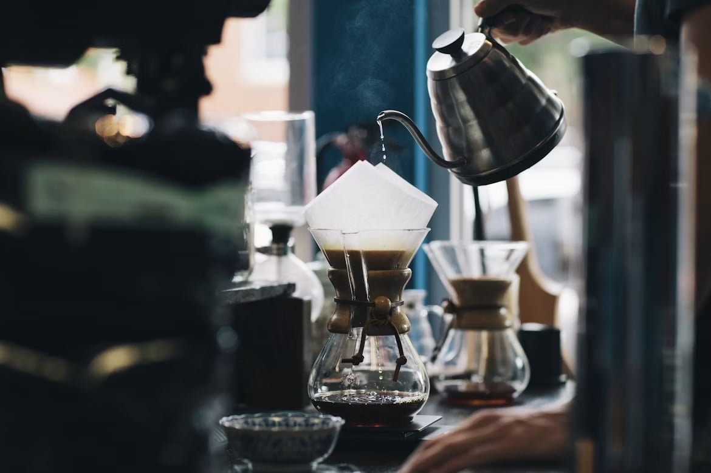
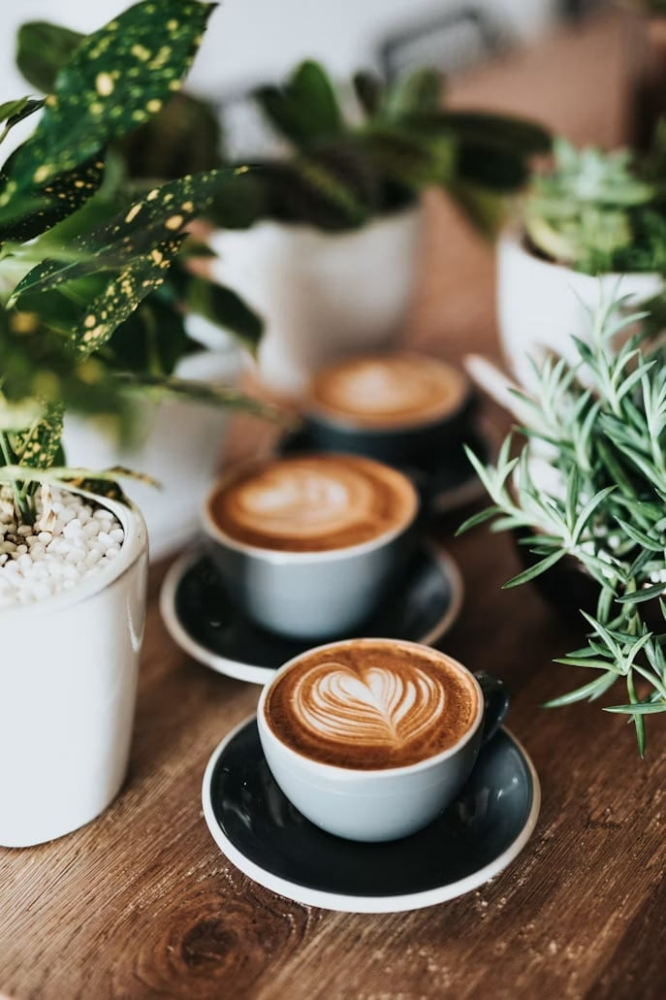

Cafe Zyan — MacArthur Hwy, Angeles, 2009 Pampanga · open 6am – 6pm
Cafe Zyan is a cozy coffee shop where every cup is made with care. We serve freshly brewed coffee, delicious pastries, and specialty drinks made with quality ingredients. Whether you're studying, working, or relaxing, there's always a place for you here.

A small bar in the heart of Angeles City. Come early for the quiet, come late for the regulars. Delivery available nearby.
